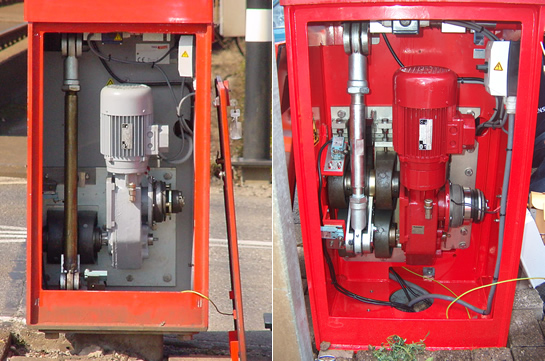
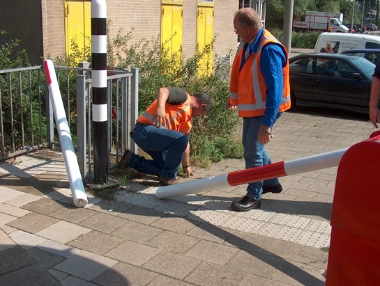
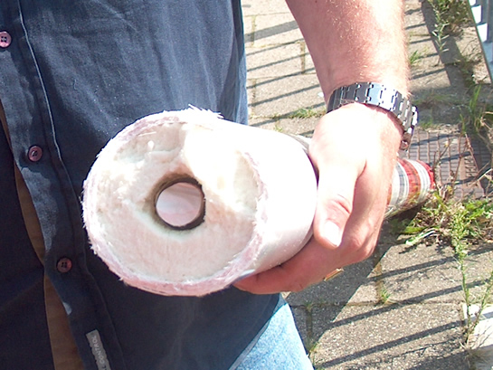

Nieuws over AHOB's en werkzaamheden...
- vrijdag 12 december 2008 08:55
- Geschreven door Joachim
De plaatsing van 21 nieuwe stellers op de gelijkvloerse kruisingen langs het sneltramtracé is onlangs voltooid. Onder 'stellers' verstaan we de aandrijving voor de slagboom, die gebruikt wordt als afzetting van een kruising, zodra er een metrosneltram passeert.
De nieuwe stellers waren nodig omdat de aandrijving het gewicht (als gevolg van de lengte) van de boom niet kon dragen. De 21 nieuwe stellers zijn alleen geplaatst op de kruisingen waar ook het autoverkeer d.m.v. een AHOB wordt afgescheiden van een passerende metrosneltram. Het betreft hier alle gelijkvloerse kruisingen behalve Hoofdweg en Pres. Rooseveltweg.
Nu de nieuwe stellers er staan(geplaatst door Cegelec), kunnen deze kruisingen voorzien worden van een slagboom die de héle breedte van het wegdek overlapt. Eerder was dit nog niet het geval. Hierdoor kon het voorkomen dat met name scooters tussen de bomen door een afgesloten kruising op konden rijden. Binnen enkele weken moeten alle daarvoor bestemde kruisingen het juiste formaat slagboom hebben.

De oude steller (links) en de nieuwe (rechts). Zoals goed te zien is de aandrijving vernieuwd en complexer geworden. Door een nieuw overbreng-systeem kan er een grotere kracht(en dus langere boom) getild worden dan voorheen.
Tochtenweg
Kruising Tochtenweg in Zevenkamp wordt naar alle waarschijnlijkheid dit najaar in gebruik genomen. Siemens Duitsland is op het moment bezig met het in gereedheid brengen van de kruising voor het testen ervan. Een precieze datum is nog niet bekend.
Hesseplaats
Op kruising Hesseplaats zijn Siemens Duitsland en Cegelec de afgelopen twee dagen bezig geweest met het plaatsen van gemodificeerde lusgroepen. Hierdoor was de kruising op enkele momenten buiten gebruik en moest de kruising extra langzaam genaderd worden door de metrosneltrams. De werkzaamheden zijn gistermiddag rond 16.00 uur afgerond.
Polyester slagboom
Op de Rietdekkerweg is onlangs een proef gehouden met een polyester slagboom in plaats van een aluminium-boom. Het betrof een boom voor het autoverkeer. De veiligheidsman ter plaatse had de eer om de polyester boom te testen op stevigheid. Helaas voor de veiligheidsman brak de boom en lag de veiligheidsman op de grond... De boom werd wel goedgekeurd voor gebruik, want de boom werd met geweld in tweeën gebroken. Eerder werd eenzelfde proef gehouden. Een polyester boom brak pas toen er 7 man opzaten. Stevig genoeg dus.
De reden dat de bomen van polyester zijn is dat de bomen voor het autoverkeer even hoog kunnen worden als de bovenleiding. Om bij een mogelijk schadegeval te voorkomen dat de boom de bovenleiding raakt en iemand onder hoogspanning komt te staan, is gekozen voor polyester, omdat dit de stroom niet geleid.

"Tijdens een woede-aanval werd de slagboom door de veiligheidsman in tweeën gebroken"

Ja, dat is het resultaat van de actie. Hier goed te zien is dat de polyester boom uit allemaal dunne laagjes bestaat. Sterk genoeg!
Enkelspoorbedrijf
In verband met werkzaamheden aan station Romeynshof werd wederom enkelspoorbedrijf gereden tussen station Binnenhof en wisselcomplex Alexander 1 via spoor 2. Later op de avond werd ook enkelspoors gereden nabij station Prinsenlaan, als gevolg van werkzaamheden aan het perron. De werkzaamheden hebben alles van doen met de revitalisering van de sneltramstations.